Clips y Capturas de Pantalla
¡Revive los mejores momentos y explora la belleza de Goat Craft 2!
Nuestros Mejores Vídeos
Castigo
El día en el que el cooldown de los tps bajó
Pelea épica
Casa de Marcos
Galería de Capturas
Desde monumentos hasta errores del juego, haz clic en las imágenes para ampliarlas.
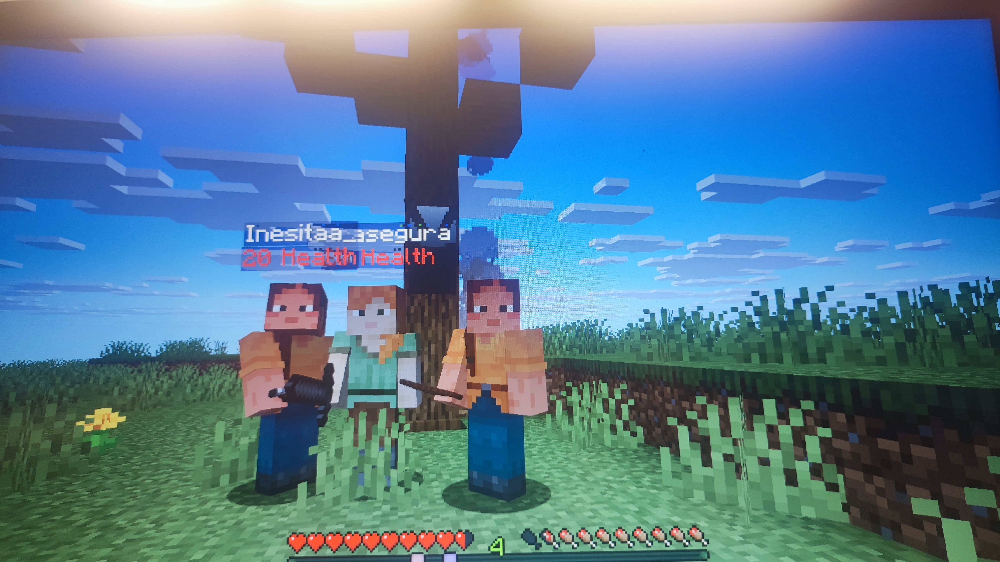
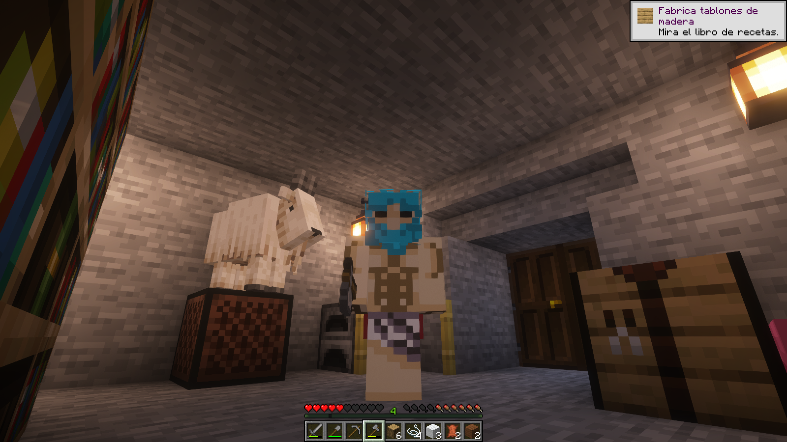
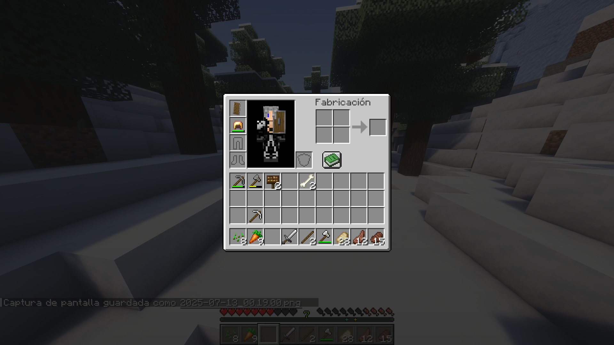
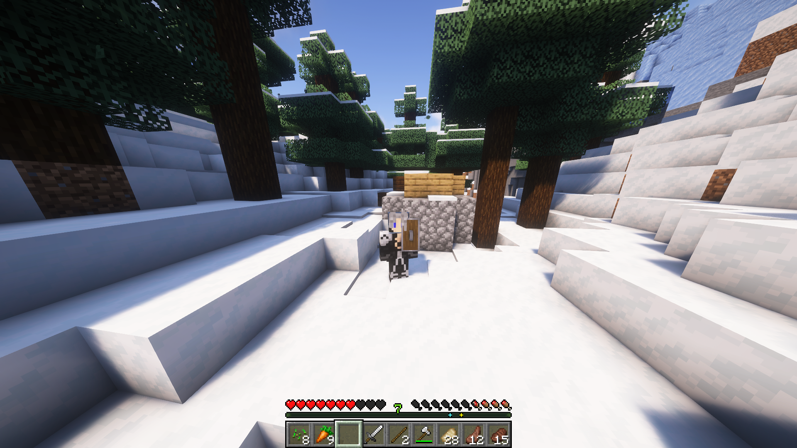
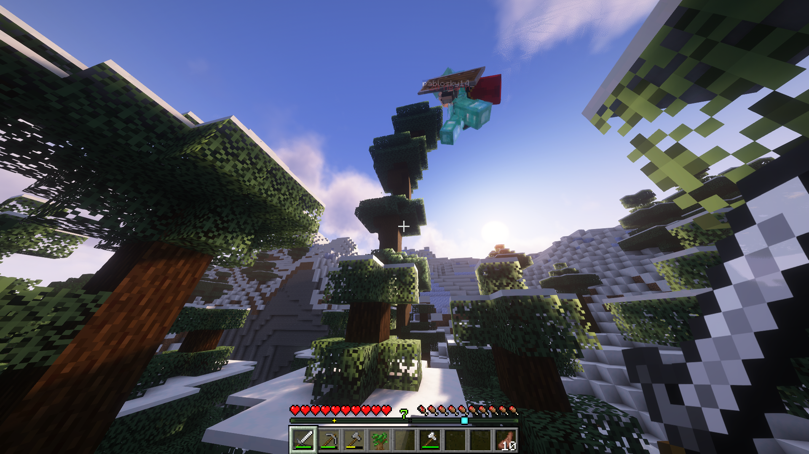
 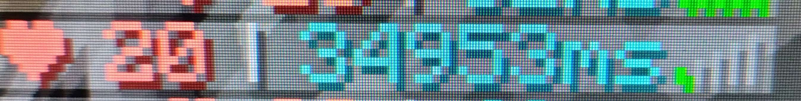
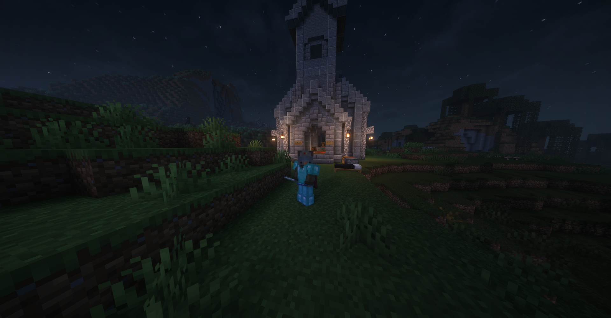
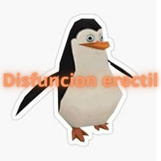
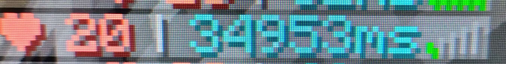
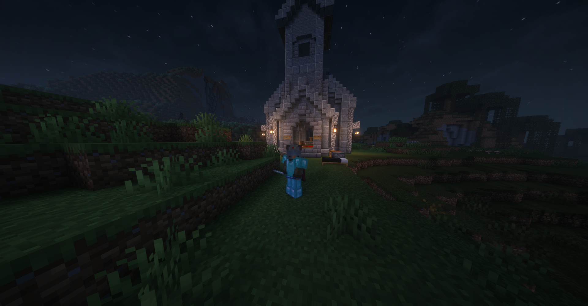
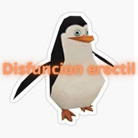
Volver al Inicio
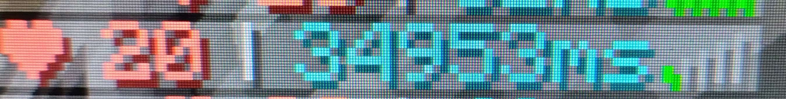
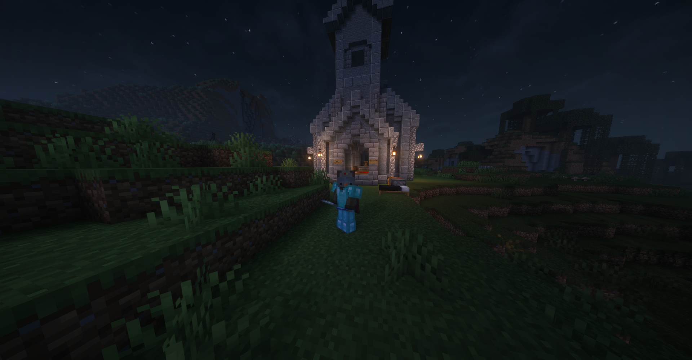
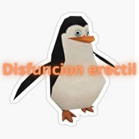